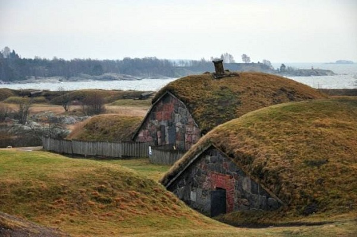

morly旅游网
据说芬兰是全世界最害怕社交的国家。在芬兰，不打扰就是最好的温柔。
芬兰位于欧洲北部，与瑞典、挪威、俄罗斯接壤，南临芬兰湾，境内的湖泊与狭窄的水道、短河、急流相连，有“千湖之国”之称。除了湖泊之外，全国为大片森林覆盖，占总面积的66.7%，以松和云杉为主。芬兰严峻的气候条件以及特殊的地理位置和历史，使芬兰拥有独特的冰雪风光，仿佛是童话里的冰雪王国，也使芬兰人形成了极富北欧特色的民族性格和文化。
芬兰属于北欧五国之一，南有群岛湖区，北有拉普兰，四时有不同美景。前往芬兰，你可以看到不同于我国的北欧人文风情和直击人心的美景，其中首都赫尔辛基是最不可或缺的目的地之一。
芬兰是圣诞老人的故乡，最早的居民为拉普人，故芬兰又称拉普兰，芬兰人迁入后，建立了芬兰大公国。
岩石教堂
又称圣殿广场教堂（Temppeliaukion kirkko），是赫尔辛基市区最为出名的几处景点之一，看上去不起眼，内部却别有洞天，震撼人心。教堂由保留着原始开凿痕迹的岩石块堆砌而成，玻璃环状天窗，顶部以铜网架支撑，自然采光，音响效果极佳，经常举办音乐会。
静默教堂
位于 Kamppi 的静默教堂，这是一座位于热闹购物中心的碗状全木质教堂，造型独特，由三种木材建造而成：云杉外墙、赤杨内墙和由白蜡树制成的内门和室内用品。教堂只有 11.5 米高，面积也不大，但并不让人感到压抑，反而给人无限向上延伸的神圣感，是一处在闹市区也能享受到片刻清静的地方。
阿黛浓美术馆
喜欢艺术设计类的朋友可以在路上进阿黛浓美术馆参观一下，那里经常会有一些特展。美术馆本身就是一座优雅的艺术品，在3-4楼之间有4座女像柱，象征建筑、绘画、雕刻和音乐 4 大艺术形式，藏品众多，是芬兰三大美术馆之一。

芬兰堡
芬兰堡早在1991南就被列入联合国教科文组织世界遗产名录。这个已有 300 多年历史的军事要塞包括近 200 个建筑及六公里长的城墙。漫步在芬兰城堡，艺术化的园林让那里就像一个大公园般舒适，你可以在这里散步跑步、聚会野餐，还可以探索芬兰堡的地道。
内容整理至网络，如有侵权，请联系我们！1255394075@qq.com